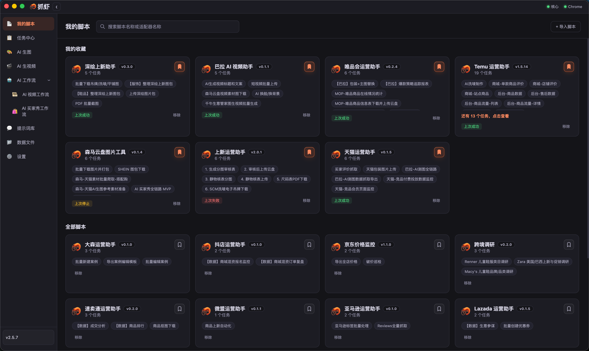
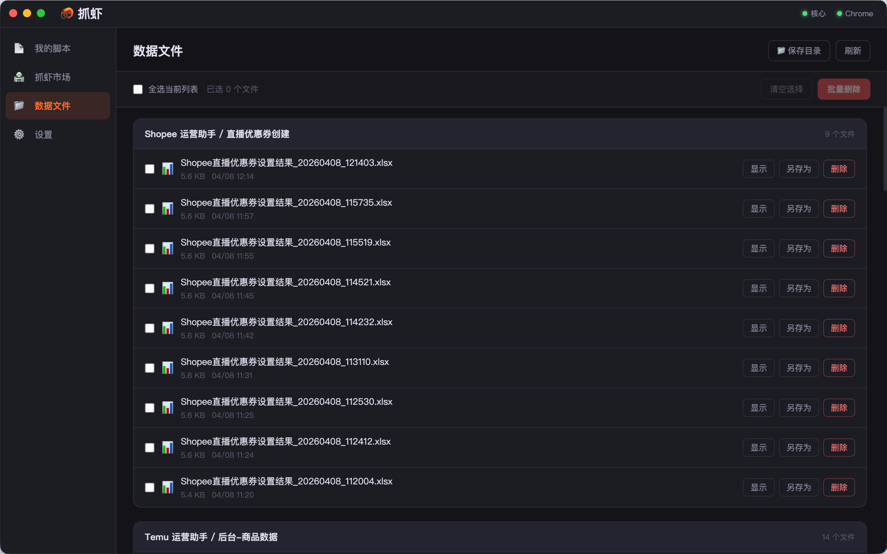
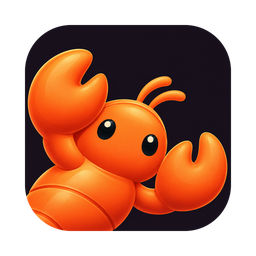

接着你的浏览器做
复用已登录的 Chrome，用独立适配包完成抓取、上新、换图和批量操作。
Chrome 登录态平台适配包


常用平台、任务和 AI 工具，放进同一个工作台。
在本地，做实事。
抓虾家族 · 桌面智能体认识抓虾 Harness。用自然语言处理网页、数据、文档与素材，在对话中交代任务，在工作台跟进过程与结果。
从网页执行到素材交付，少在工具之间来回搬运。
过程有记录，结果能复查。
复用已登录的 Chrome，用独立适配包完成抓取、上新、换图和批量操作。
在同一个桌面端生图、改图、生视频。从一次尝试到批量任务，保留草稿与运行记录。
图片、成片和数据保存在本地。需要协作时，再接入云端审核与任务机派发。
灵感可以先试一张。
确定方向，再按款号批量制作。
GPT Image 与 Gemini 图像模型，支持批量 Prompt、圈选标注与二次编辑。
按模型选择文生、图生、首尾帧或参考素材。任务完成后，下载成片并在列表中播放。
审核通过的版本，再进入视频制作。
按款号准备素材
保留来源与版本
通过、舍弃或重跑
批量提交任务
查看状态与成片
商品、评价、流量、财务与价格监控，按 Excel、JSON 或 SQLite 导出。
把素材上传、优惠券、商品上新等后台流程封装成任务，保留执行日志与证据。
从云盘找图、整理图包，到上传、审核与测图数据回收，串起业务上下游。
免费体验真实任务。
需要更多适配包，再升级或定制。
从基础网页自动化开始。
标准核心能力永久使用，含一年免费更新。
数据抓取脚本 ¥500 / 个起 · 网页自动化程序 ¥2000 / 个起
抓虾复用真实、已登录的 Chrome，并通过独立适配包封装平台流程，无需为每个后台重新搭建账号环境。
AI 生视频适合灵活组合模型、Prompt 和参考素材；视频工作流适合按款号完成找图、改图、审核、生成和结果交付。
不需要。网页自动化、本地 Prompt、AI 生图与生视频可以单机运行。多人审核、共享 Prompt 与任务机调度按需启用。
不会。应用自动检查并提醒，下载与重启安装由你确认。如果有任务正在运行，会等待任务安全结束。